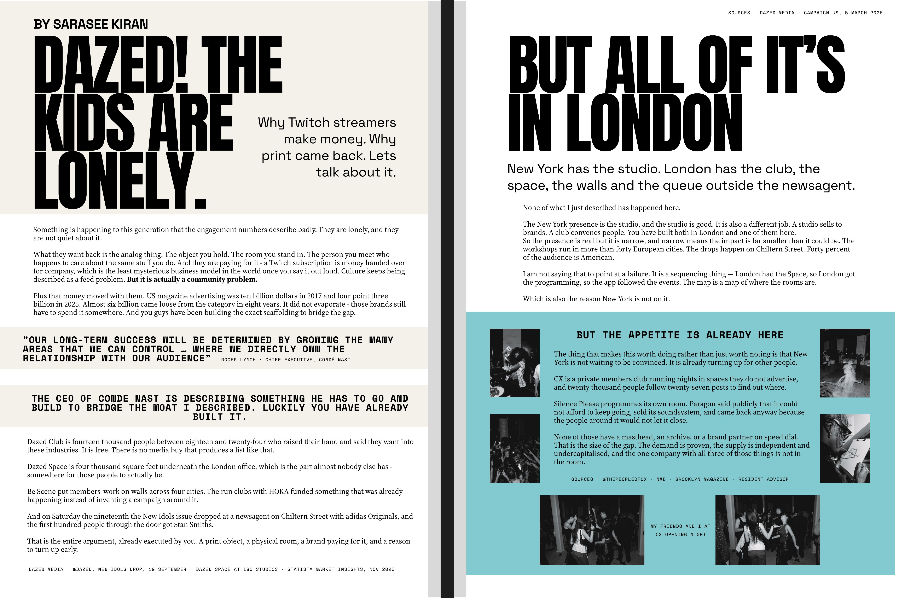
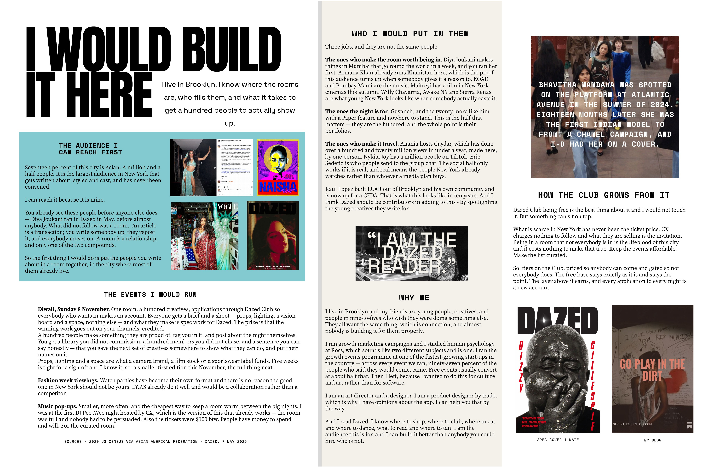

Growth · Cursor · January to August 2026
Growth Lead at Cursor through its hypergrowth period. The site for the inaugural conference is live at cursor.com/compile. The full case sits behind a password.
Strategy · Dazed Media · Self-initiated · September 2026


Researched, written, art directed and designed. 2026.
A spec growth brief arguing that the analogue object and the physical room are where a media brand's money is moving next, and that the scaffolding for it is already built.
US magazine advertising was ten billion dollars in 2017 and four point three billion in 2025. Almost six billion came loose from the category in eight years. It did not evaporate. Those brands still have to spend it somewhere.
Culture keeps being described as a feed problem. It is actually a community problem. What this generation wants back is the analogue thing: the object you hold, the room you stand in. And they are paying for it.
Dazed has already built the scaffolding. Dazed Club is fourteen thousand people between eighteen and twenty-four who raised their hand and said they want into these industries. Dazed Space is four thousand square feet underneath the London office. The New Idols issue dropped at a newsagent on Chiltern Street with adidas Originals. A print object, a physical room, a brand paying for it, and a reason to turn up early. But all of it is in London. New York has the studio. A studio sells to brands. A club convenes people.
Spread two turns that into a plan: the audience New York already has, the events (a Diwali edition on 8 November, fashion week viewings, music pop-ups), who would be in the room, and a paid tier that sits on top of the free Club without touching what makes it free.
Sourced throughout: census data, category ad spend, the company's own public statements, with every figure attributed on the page, in the same credit language as the editorial work. Strategy laid out as editorial rather than as slides, so the document reads like the thing it is proposing.
Self-initiated. Not commissioned by Dazed Media.